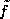

News
News
| Getting Started | Documentation | Glish | Learn More | Programming | Contact Us |
|
| VERSIONID |
News
|
DAT
database
data cube
DataManager
declination
deconvolution
delay beam
derived class
destructor
digitizer
direct Fourier transform
dirty beam
dirty image
discrete Fourier transform
disk hog
Display Library
Distributed Object
dithering
domain theory
Doppler correction
dork
drag and drop
drift curve
dynamic range
Digital Audio Tape, a magnetic tape format developed by Sony and Philips in the mid-1980's. DAT uses a rotary-head (or "helical scan") format, where the read/write head spins diagonally across the tape as in a video cassette recorder. Its proper name is "R-DAT", where "R" for rotary distinguishes it from "S-DAT", an earlier stationary design. Most computer DAT recorders use DDS format, which is the same as audio DAT, but it is not always possible to read tapes from one system on the other. Compare Exabyte.
One or more structured sets of persistent data, usually associated with software (a database management system) to update and query the data. In AIPS++, the Table system is used to enable a database.
A simple database might be a single file containing many records, each of which contains the same set of fields where each field is a certain fixed width. A more complex relational database allows the definition of data structures, storage and retrieval operations, and integrity constraints. In such a database, the data and relations between them are organized in tables.
1. In spectral line data analysis, a three-dimensional image representing a function of three real variables: two spatial variables representing position in the sky, and one variable related to frequency or velocity.
2. Any n-dimensional image, n>2.
In AIPS++, DataManager maps values to Tables. It is the base class for various StorageManagers which read or write data values from or to a storage device. A DataManager is also used to implement virtual tables and columns.
Angular distance north or south of the celestial equator to an astronomical object, measured in degrees of arc along the hour circle passing through the object. Analogous to geographic latitude on the Earth.
The numerical inversion of a convolution equation, either continuous or discrete, in one or several variables; i.e., the numerical solution (for f) of an equation of the form f*g = h + {noise}, given g and given the right-hand side of the equation.
Except in trivial cases, deconvolution is an ill-posed problem: In the absence of constraints or extra side-conditions, and in the case of noiseless data---assuming that some solution exists--- there usually will exist many solutions. In the case of noisy data, there usually will exist no exact solution, but a multitude of approximate solutions. In the latter case, if one is not careful in the choice of a numerical method, the computed approximate solution is likely not to have a continuous dependence on the given data. The so-called regularization method (of which the Maximum Entropy Method is a special case) is an effective tool for the deconvolution problem.
Discrete two-dimensional deconvolution is an everyday problem in radio interferometry, owing to the fact that---under certain simplifying assumptions---the so-called dirty image is the convolution of the dirty beam with the true celestial radio image. In addition to the maximum entropy method, the Högbom CLEAN algorithm and its derivatives are commonly applied to this problem.
In radio interferometry, the point spread function or beam, taking into account bandwidth smearing, but ignoring other instrumental effects.
A function provided by a class in C++ to do the book-keeping needed to delete an object.
In object-oriented programming, a class which is created from a base class. A derived class may have more functionality than its base class, especially if the latter is an abstract base class. It may also modify the meaning of a member function, especially if the class is to be used polymorphically.
A device that converts analog data to a discrete, digital representation. Any digitizer combines two operations:
A term used imprecisely in radio astronomy to mean either:
1) a finite trigonometric sum, of the form
with a complex, where the (real) u are irregularly-spaced;
2) the brute-force evaluation of such a sum, or
3) the naïve, or brute-force evaluation (using of order n-squared arithmetic operations) of the n-point discrete Fourier transform.
The direct Fourier transform, in senses 1) and 2) of the definition, arises in synthesis imaging applications because of the irregular distribution of the visibility measurements. Common practice is to use a gridding convolution function to interpolate the data onto a regularly-spaced lattice, so that the fast Fourier transform algorithm may be used, for computational economy.
In radio interferometry, simply a beam, but computed with precisely the same operations as those used to compute some companion dirty image (i.e., with the same u-v coverage, the same manner of gridding convolution, the same u-v weight function and taper, etc.). In deconvolving a dirty image, only the companion dirty beam should be used.
1. ignoring instrumental effects, the inverse Fourier transform of the product SV of the visibility function V of the radio source and the (possibly weighted and/or tapered) u-v sampling distribution S; i.e., the inverse transform of the u-v measurement distribution.
2. a discrete approximation to 1; in this case, the product SV is convolved with some function C, of compact support, and an inverse discrete Fourier transform of samples of C*(SV) taken over a regular grid yields the dirty image.
3. as in 2, but corrected for the taper (the inverse Fourier transform of C) induced by the convolution.
4. any of the above, but now taking into account various instrumental effects (receiver noise, non-monochromaticity or finite bandwidth, finite integration time, sky curvature, etc.).
If it is assumed that V is unity everywhere, then the image, or point source response, so obtained is termed the beam. Also see gridding convolution function, u-v taper function, u-v weight function, dirty beam, and principal solution.
The (one-dimensional) discrete Fourier transform (DFT) of a sequence of complex numbers  is given by the summation
is given by the summation

(The multi-dimensional generalization is straightforward).
The x are given by the inverse DFT of the y:
(The forward and inverse transforms are frequently defined in the manner opposite to that given here, and the 1/n normalization factor is sometimes moved about.)
The DFT arises most naturally in numerically approximating the Fourier coefficients
of a  -periodic function f
which is representable by the trigonometric series
-periodic function f
which is representable by the trigonometric series
The fast Fourier transform (FFT) algorithm can be used for efficient numerical evaluation of the DFT.
A derogatory term, used to connote a computer user whose disk data files are excessively voluminous or numerous, therefore putting other computer users at a relative disadvantage.
A C++ library with associated Glish binding for the display of various types of data, such as Images and MeasurementSets.
Generically, an object that may be accessed over a network connections. Thus the methods of the object may be executed by a simple syntax and without regard to the location of the object. In AIPS++, a binding of functionality in the C++ libraries to Glish. All AIPS++ tools are implemented using the AIPS++ DO interface.
A branch of mathematics introduced by Dana Scott in 1970 as a mathematical theory of programming languages, and for nearly a quarter of a century developed almost exclusively in connection with denotational semantics in computer science.
In denotational semantics of programming languages, the meaning of a program is taken to be an element of a domain. A domain is a mathematical structure consisting of a set of values (or "points") and an ordering relation, <= on those values. Domain theory is the study of such structures.
Different domains correspond to the different types of object with which a program deals. In a language containing functions, we might have a domain X -> Y which is the set of functions from domain X to domain Y with the ordering f <= g iff for all x in X, f x <= g x. In the pure lambda-calculus all objects are functions or applications of functions to other functions. To represent the meaning of such programs, we must solve the recursive equation over domains,
D = D -> D
which states that domain D is (isomorphic to) some function space from D to itself, i.e. it is a fixed point D = F(D) for some operator F that takes a domain D to D -> D. The equivalent equation has no non-trivial solution in set theory.
There are domain-theoretic computational models in other branches of mathematics including dynamical system, fractals, measure theory, integration theory, probability theory and stochastic processes.
The correction of an observed astronomical spectrum to a standard reference velocity system.
The observer rotates with the surface of the earth, which moves around the moon-earth barycenter, which moves around the solar system barycenter, which moves with respect to local stars, which revolve around the galactic center, etc. For standardization, apparent radial velocities of features in astronomical spectra are referred to one of a small number of defined velocity frames. These include the heliocentric velocity system, and the local standard of rest (LSR).
In AIPS++, a derogatory term used by programming hyper-deities to describe ordinary mortals. Possibly related to the Dorking, a strain of mutant chicken with supernumerary toes.
A common method for manipulating files (or on-screen objects such as text or graphics) in a graphical user interface or WIMP environment. The user selects an icon, filename or other object by moving a cursor and holds a button down while "dragging" the cursor and the "attached" object to another part of the display, which might be an icon for an application program, or merely a new location for the object (as in a word-processor). The object is "dropped" from the cursor by releasing the button. The meaning of this action may be modified by simultaneously pressing certain keys.
Human-computer interaction studies show a higher failure rate for such operations than for command-line statements, but also a higher "forgiveness rate". (Users are more likely to think "silly me" than "stupid machine" when a drag-and-drop operation gives an unintended result).
In single-dish radio astronomy, the output of a receiver as function of time when a radio source passes through the beam of a stationary antenna due to the rotation of the Earth.
A summary measure of image quality indicative of the ability to discern dim features when relatively stronger features are present---i.e., a measure of the ability to distinguish the dim features from artifacts of the image reconstruction procedure (in a radio image, from remnants of the sidelobes of stronger features) and from noise. The dynamic range achievable in a radio interferometer image is determined primarily by the uniformity of the u-v coverage, the density and extent of the coverage, the sensitivity of the array, and the quality of the calibration.
If the true radio source brightness distribution f is known, one can define the dynamic range of a reconstruction  as, say, the ratio of the maximum value of |f| to the r.m.s. difference between f and . When f is unknown, as is usually the case, an empirical measure of the dynamic range is used---perhaps the ratio of the maximum value of || to the r.m.s. level in an apparently empty region of the image, or the ratio of the strongest feature to the weakest believable feature, but there is no widely-accepted definition.
What one might wish to call the true dynamic range of a radio image is a spatially-variant quantity. The ability to discern a dim feature depends on its proximity to brighter features, because there are relatively stronger sidelobe remnants near the bright features. The quality of an image (and perhaps the dynamic range---depending on how it is defined) deteriorates away from the phase tracking center, because of the inability of the image reconstruction algorithms to compensate for various instrumental effects (e.g., pointing errors, bandwidth smearing, etc.).
You could now go back to the:
Copyright © 1995,1996,1997,1999,2000 Associated Universities Inc., Washington, D.C.
abridle@nrao.edu, 19 July 1996, 14:11 EDT